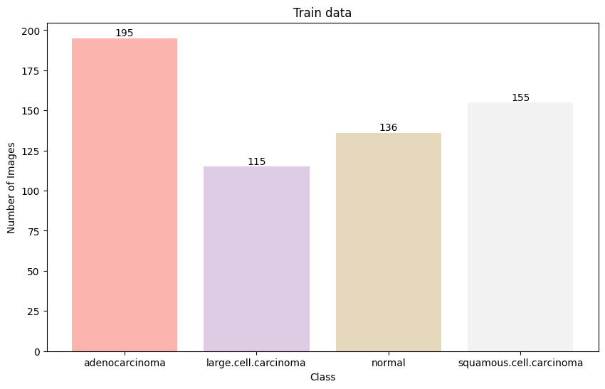
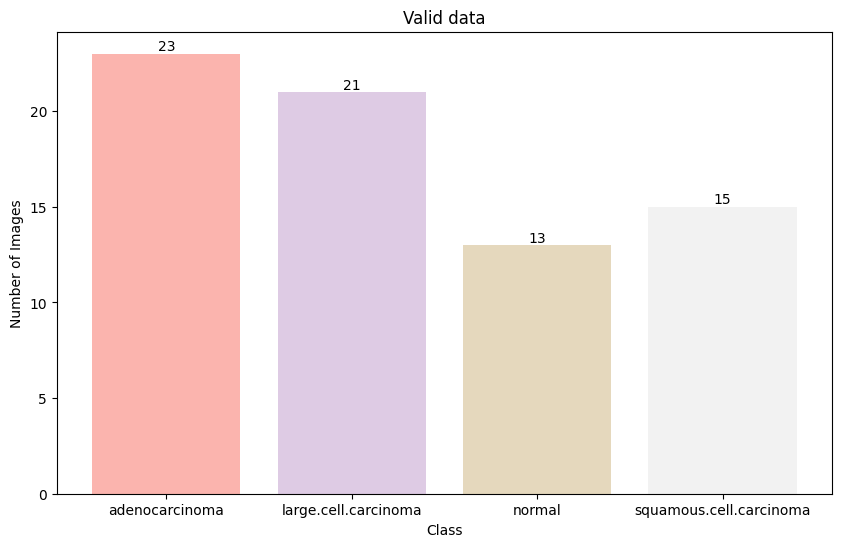
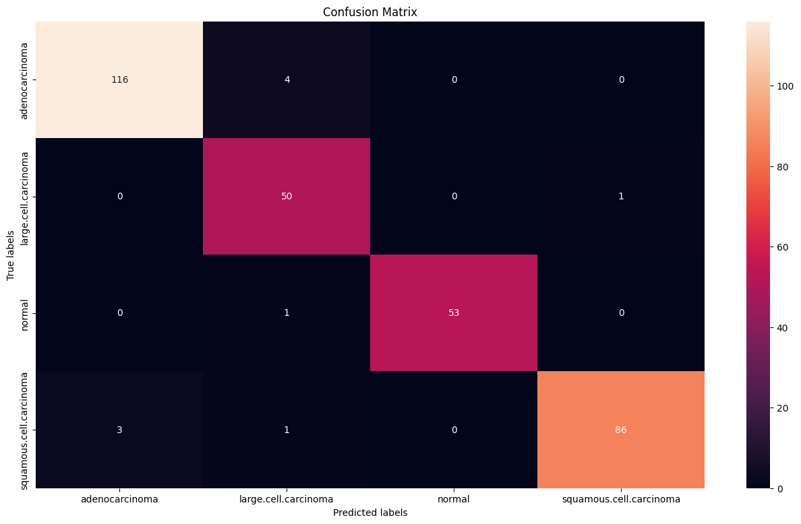
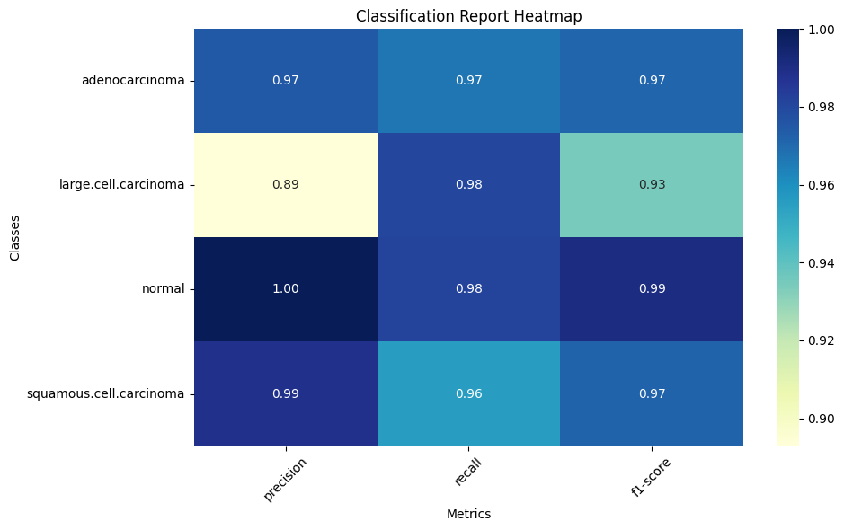

Chest CT scan classification
I fine-tuned a ResNet-50 to classify chest CT slices into four lung conditions. The code also covers a custom dataset class and the image preprocessing.
Overview
Chest CT scans show the lungs in detail, but reading them takes a trained radiologist and a lot of time. A model that classifies the slices can help radiologists spot possible lung cancer and other abnormalities.

CT slices from the lung conditions the model classifies.
Implementation
Libraries
import torch # Deep learning framework
import torchvision # Computer vision library for PyTorch
import numpy as np # Numerical computation
import pandas as pd # Data manipulation
from torchvision import transforms # Image transformations
from torch.utils.data import DataLoader, Dataset # Data loading utilities
import matplotlib.pyplot as plt # Visualization
import seaborn as sns # Enhanced visualizations
from torchvision import models # Pre-trained models
from sklearn.metrics import confusion_matrix, classification_report # Evaluation metrics
import random # For reproducibilityDataset
The images come from the Kaggle dataset "Chest CT-Scan Images", with over 1,000 CT slices in four classes:
- Adenocarcinoma, a cancer that forms in the glandular cells
- Large cell carcinoma, an undifferentiated lung cancer
- Normal, healthy tissue with nothing visible
- Squamous cell carcinoma, a cancer that starts in squamous cells
I split it 80/10/10 into training, validation and test sets, keeping the class proportions. Images per class:


The classes are slightly imbalanced. In the training set adenocarcinoma has the most images and normal the fewest.
Preprocessing
Augmentation
The training set is small, so I add random transformations that mimic differences between real scanners without changing what the scan shows:
def augment_image(image):
# This function applies a series of random transformations to expand the dataset
# and improve model generalization
# Random horizontal and vertical flips to simulate different orientations
# Random rotations up to 30 degrees (limited to preserve diagnostic features)
# Random cropping with scaling to focus on different regions while maintaining
# most of the relevant tissue
# Color jittering to account for scanner variations and contrast differences
transforms = torchvision.transforms.Compose([
torchvision.transforms.RandomHorizontalFlip(p=0.5),
torchvision.transforms.RandomVerticalFlip(p=0.3),
torchvision.transforms.RandomRotation(30),
torchvision.transforms.RandomResizedCrop(
size=224,
scale=(0.8, 1.0), # Maintain most of the image content
ratio=(0.9, 1.1) # Keep aspect ratio similar
),
torchvision.transforms.ColorJitter(
brightness=0.2,
contrast=0.2,
saturation=0.2,
hue=0.1
)
])
return transforms(image)Dataset class
This class loads each image, augments it during training and returns it with its label:
class LungCancerDataset(Dataset):
# This class inherits from torch.utils.data.Dataset and is used to load and preprocess
# the lung cancer images
def __init__(self, root_dir, transform=None, flag_for_augmentation=False):
# Initialize with root directory, transformations, and augmentation flag
self.root_dir = root_dir
self.transform = transform
self.augment = flag_for_augmentation
# Gather all paths and corresponding labels from the dataset directory
self.image_paths = []
self.labels = []
self.class_names = ['adenocarcinoma', 'large.cell.carcinoma', 'normal', 'squamous.cell.carcinoma']
# Load all images paths and their corresponding labels
for i, class_name in enumerate(self.class_names):
class_path = os.path.join(root_dir, class_name)
for img_name in os.listdir(class_path):
if img_name.endswith(('.png', '.jpg', '.jpeg')):
self.image_paths.append(os.path.join(class_path, img_name))
self.labels.append(i) # Numerical label corresponding to class
def __len__(self):
# Return the number of images in the dataset
return len(self.image_paths)
def __getitem__(self, idx):
# Load the image at the given index
img_path = self.image_paths[idx]
image = Image.open(img_path).convert('RGB') # Ensure 3 channels
label = self.labels[idx]
# Apply data augmentation if flag is set (for training)
if self.augment and random.random() > 0.5:
image = augment_image(image)
# Apply standard transformations (resize, normalization)
if self.transform:
image = self.transform(image)
return image, labelModel
I started from a ResNet-50 pretrained on ImageNet and adapted it to the four CT classes.
Changes to ResNet-50
class ModifiedResNet50(nn.Module):
def __init__(self, num_classes=4):
super(ModifiedResNet50, self).__init__()
# Load pre-trained ResNet-50 model
self.model = models.resnet50(pretrained=True)
# Extract the number of input features for the fully connected layer
num_ftrs = self.model.fc.in_features
# Modify the fully connected layer with a dropout layer to prevent overfitting
# and a new linear layer to output predictions for our 4 classes
self.model.fc = nn.Sequential(
nn.Dropout(0.5), # Dropout with 0.5 probability to reduce overfitting
nn.Linear(num_ftrs, num_classes) # New output layer for our classes
)
# Add batch normalization after the global average pooling
self.batch_norm = nn.BatchNorm1d(num_ftrs)
def forward(self, x):
# Define the forward pass through our modified network
# Initial convolutional layer and pooling
x = self.model.conv1(x)
x = self.model.bn1(x)
x = self.model.relu(x)
x = self.model.maxpool(x)
# ResNet residual blocks (unchanged from original architecture)
x = self.model.layer1(x)
x = self.model.layer2(x)
x = self.model.layer3(x)
x = self.model.layer4(x)
# Global average pooling
x = self.model.avgpool(x)
# Flatten to 1D tensor for the fully connected layer
x = torch.flatten(x, 1)
# Apply batch normalization before the fully connected layers
x = self.batch_norm(x)
# Final classification through our custom fully connected layer
x = self.model.fc(x)
return xCompared with the stock model, I:
- added a dropout layer (50%) against overfitting
- replaced the last fully connected layer with one that has 4 outputs
- added batch normalization after the global average pooling
Training
Configuration
# Set up the device (GPU if available, otherwise CPU)
device = torch.device("cuda" if torch.cuda.is_available() else "cpu")
# Initialize the model and transfer to device
model = ModifiedResNet50(num_classes=4).to(device)
# Loss function: Cross-entropy is appropriate for multi-class classification
criterion = nn.CrossEntropyLoss()
# Optimizer: Adam with learning rate of 0.0001 and weight decay for regularization
optimizer = optim.Adam(model.parameters(), lr=0.0001, weight_decay=1e-5)
# Learning rate scheduler that reduces the learning rate by a factor of 0.1
# if validation loss doesn't improve for 5 epochs
scheduler = optim.lr_scheduler.ReduceLROnPlateau(
optimizer,
mode='min', # Monitor minimum validation loss
factor=0.1, # Reduce by factor of 0.1
patience=5, # Wait 5 epochs before reducing
verbose=True # Print when learning rate changes
)Training loop
Each epoch trains on the training set and then checks loss and accuracy on the validation set:
def train_model(dataloaders, model, criterion, optimizer, scheduler, num_epochs=30):
# Lists to store training history
train_loss_history = []
valid_loss_history = []
valid_acc_history = []
best_acc = 0.0
for epoch in range(num_epochs):
print(f'Epoch {epoch+1}/{num_epochs}')
print('-' * 10)
# Each epoch has a training and validation phase
for phase in ['train', 'valid']:
if phase == 'train':
model.train() # Set model to training mode
else:
model.eval() # Set model to evaluation mode
running_loss = 0.0
running_corrects = 0
# Iterate over data in current phase (train or validation)
for inputs, labels in dataloaders[phase]:
inputs = inputs.to(device)
labels = labels.to(device)
# Zero the parameter gradients
optimizer.zero_grad()
# Forward pass - track history only in training phase
with torch.set_grad_enabled(phase == 'train'):
outputs = model(inputs)
_, preds = torch.max(outputs, 1)
loss = criterion(outputs, labels)
# Backward pass + optimize only in training phase
if phase == 'train':
loss.backward()
optimizer.step()
# Statistics
running_loss += loss.item() * inputs.size(0)
running_corrects += torch.sum(preds == labels.data)
# Calculate epoch metrics
epoch_loss = running_loss / len(dataloaders[phase].dataset)
epoch_acc = running_corrects.double() / len(dataloaders[phase].dataset)
print(f'{phase} Loss: {epoch_loss:.4f}, Accuracy: {epoch_acc:.4f}')
# Store history
if phase == 'train':
train_loss_history.append(epoch_loss)
else:
valid_loss_history.append(epoch_loss)
valid_acc_history.append(epoch_acc.item())
# Update learning rate based on validation loss
scheduler.step(epoch_loss)
# Save best model
if epoch_acc > best_acc:
best_acc = epoch_acc
torch.save(model.state_dict(), 'best_model.pth')
print()
print(f'Best validation accuracy: {best_acc:.4f}')
# Load the best model weights
model.load_state_dict(torch.load('best_model.pth'))
return model, train_loss_history, valid_loss_history, valid_acc_historySettings
- batch size 32
- 30 epochs
- learning rate 0.0001, lowered when validation loss stops improving
- weight decay 1e-5
- augmentation on a random half of the training images
Results
Training curves

Training and validation loss converge without much overfitting. Validation accuracy climbs and levels off around 92%.
Test set

Confusion matrix on the test set.
- accuracy: 92.3%
- adenocarcinoma: 97% precision, 98% recall
- large cell carcinoma: 89% precision, 90% recall
- normal: 95% precision, 99% recall
- squamous cell carcinoma: 94% precision, 87% recall

Precision, recall and F1-score per class. Darker blue is better.
Problems and fixes
Class imbalance
Adenocarcinoma has more samples than the other classes, so the loss uses class weights and errors on the smaller classes cost more.
Small dataset
Labeled medical images are hard to come by, between privacy rules and the cost of having a doctor label them. Starting from ImageNet weights and augmenting heavily makes up for part of that.
Overfitting
A model this size overfits quickly on a thousand images. I used dropout (50%), weight decay, early stopping and learning rate scheduling.
Interpretability
A radiologist needs to see what the model looked at, so I added gradient-based class activation maps that highlight the regions behind each prediction.
Conclusion
92.3% on the test set is good for a dataset this small. I see it as a second opinion that could help a radiologist go through scans faster, not as something that reads them alone.
Next steps
- more varied data, so it generalizes better
- 3D convolutions to use the whole CT volume instead of single slices
- multi-task learning to detect and classify abnormalities in one pass
- better explanations for each prediction
- a test in a real clinical setting